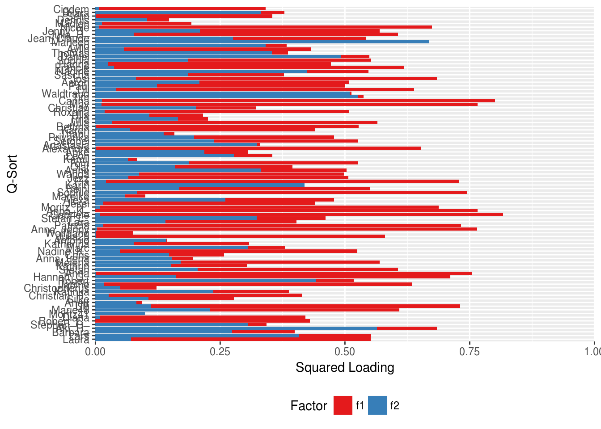
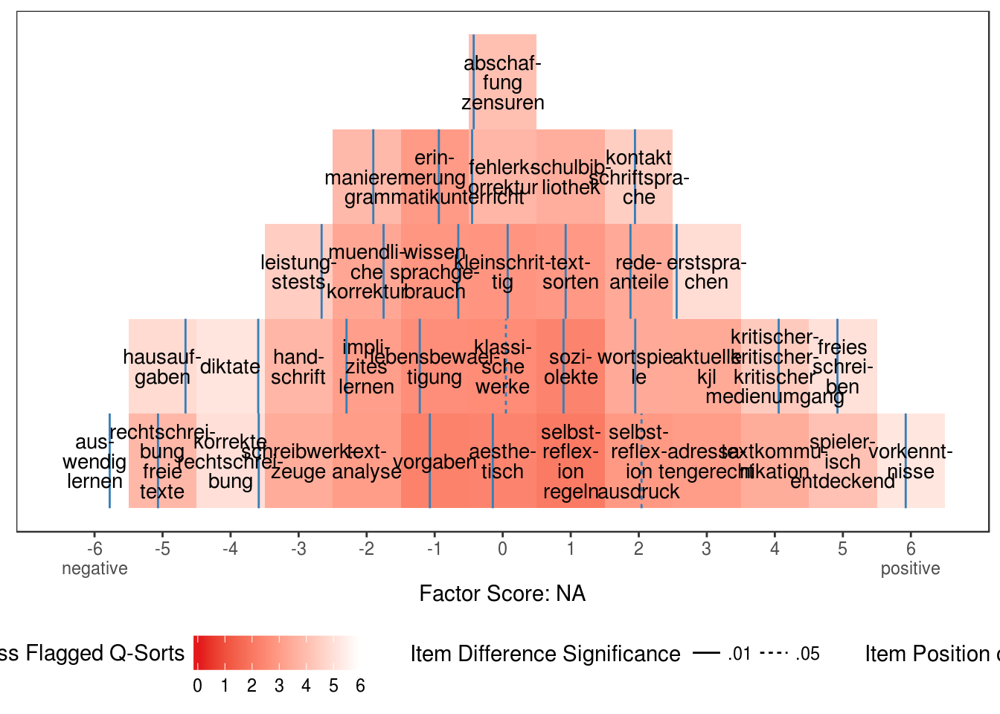
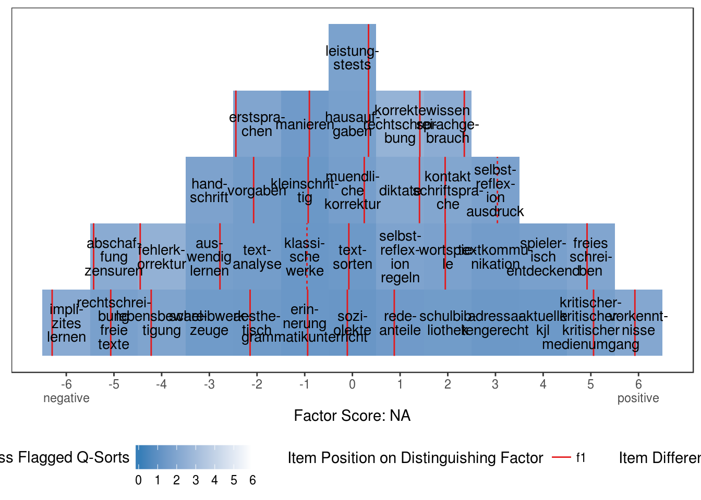

Kapitel 2 Analyse
2.1 Faktorerhaltung
2.2 Faktorexktration
## Q-method analysis.
## Finished on: Sun Feb 5 21:23:07 2017
## Original data: 37 statements, 91 Q-sorts
## Forced distribution: FALSE
## Number of factors: 2
## Rotation: varimax
## Flagging: automatic
## Correlation coefficient: spearman

Abbildung 2.1: Ladungen der Faktoren auf den Leute-Variablen

Abbildung 2.2: Idealtypische Sortierungen Faktor 1

Abbildung 2.3: Idealtypische Sortierungen Faktor 2